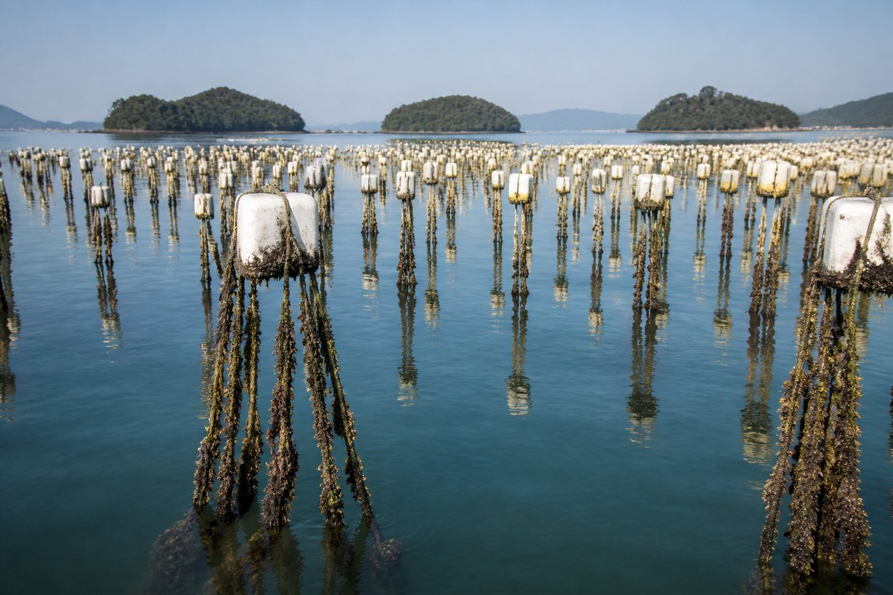
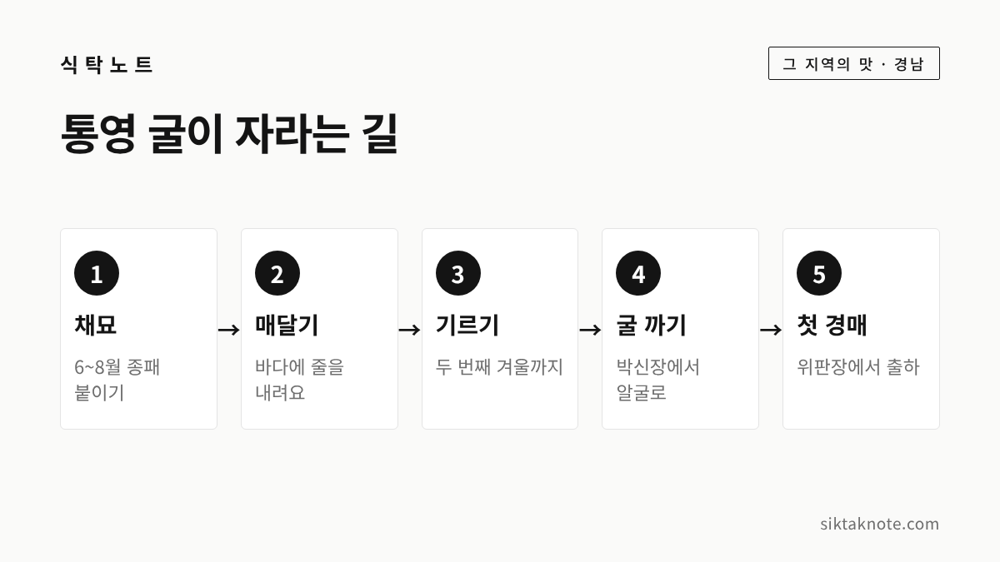
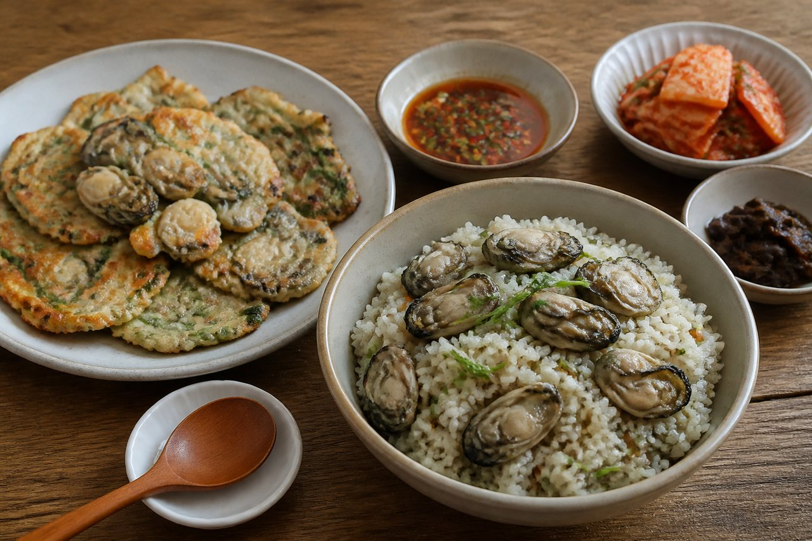
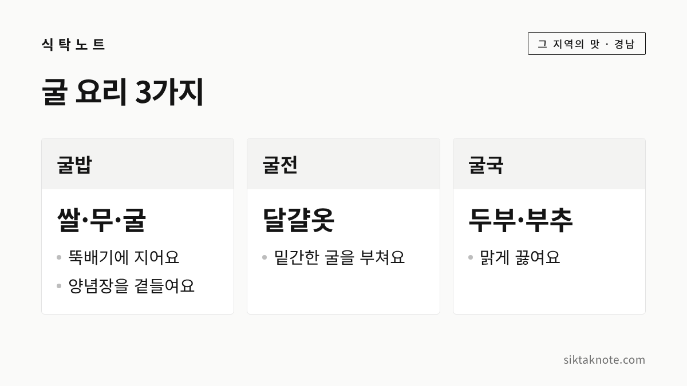

통영 굴 이야기 — 줄에 매달아 키운 햇굴과 굴 요리 3가지

3줄 요약
- 통영 굴은 물살이 거칠지 않은 남해안 내만에서 줄에 매달아 키우는 수하식으로 길러져요.
- 2026년 10월 22일 통영에서 햇굴 첫 경매인 초매식이 열렸고, 출하는 내년 봄과 초여름까지 이어진다고 보도됐습니다.
- 굴밥·굴전·굴국은 신문과 잡지에서 자주 소개되는 굴 요리이고, 굴 전용 축제는 올해 확인하지 못했습니다.
행사 정보
- 행사
- 2026 어부장터 x 포트빌리지 통영 (통영 수산물 먹거리 장터)
- 기간
- 2026년 11월 6일~8일, 10:00~21:00
- 장소
- 경남 통영시 도남동 트라이애슬론광장 (도남동 650-3)
- 입장
- 무료, 현장 접수만 가능
- 굴 관련
- 굴 전용 프로그램은 안내에 없고, 먹거리 부스에서 굴 등 통영 수산물 메뉴를 판다고 소개돼요
2026.10.26 확인 기준. 행사 내용은 주최 측 사정에 따라 바뀔 수 있습니다. 굴 메뉴가 나오는지는 가시기 전에 문의처(070-4680-1718)로 확인해 주세요.
올해 햇굴이 나왔습니다
통영 굴이 올해도 바다에서 올라오기 시작했는데요. 보도에 따르면 2026년 10월 22일 통영시 용남면의 굴수하식수협 위판장에서 햇굴 첫 경매인 초매식이 열렸습니다. 10kg들이 알굴이 5천 상자가 넘게 나왔고, 한 상자에 8만~9만 원대로 거래됐다고 해요. 물량과 가격은 지난해와 비슷한 수준이라고 합니다.
그래서 이번 글에서는 통영이 왜 굴 산지로 알려졌는지, 굴을 어떻게 키우는지, 그리고 집에서 해 먹기 좋은 굴 요리 3가지를 차례로 이야기해 볼게요. 올해 통영에서 열리는 먹거리 행사도 확인된 만큼만 적어 두었습니다.

통영이 굴 산지로 알려진 까닭
굴은 물살이 거센 곳에서는 잘 자라지 않는다고 합니다. 그래서 대규모 양식은 조류가 거칠지 않은 내만에서 이뤄지는데요. 매일신문 기사는 이런 이유로 통영, 거제, 여수에서 굴 양식이 발달했다고 설명합니다. 남해안에서 나는 굴이 전국 생산량의 70% 안팎, 또는 그 이상을 차지한다는 보도가 이어지고 있어요. 자료마다 수치가 조금씩 달라서 "전체의 대부분"이라고 읽어 두시면 됩니다.
2026년 햇굴 소식을 전한 경남도민일보는 통영 굴을 한려수도 청정 바다에서 생산된다고 소개했습니다. 굴수협 조합장이 통영을 미국 식품의약국이 지정한 청정해역이라고 말했다는 내용도 함께 실렸어요. 조합장의 설명으로 전해진 말이니, 그렇게 말했다고 보도되었다는 정도로 받아들이시면 좋겠습니다.
서울신문 기사에는 남해안과 서해안 굴의 차이도 나옵니다. 서해안 갯벌에서 자란 굴은 썰물 때 껍데기를 닫고 몇 시간씩 굶기 때문에 작고 쫄깃한 편이고, 통영과 거제 굴은 계속 먹이를 먹어서 더 크다는 설명이에요.

줄에 매달아 키우는 수하식
통영 굴 이야기에 늘 따라붙는 말이 수하식(垂下式)입니다. 한국민족문화대백과사전에 따르면 수하식은 줄을 수직으로 늘어뜨려 굴을 매달아 기르는 방식인데요. 수면을 입체적으로 쓰기 때문에 생산성이 높고 굴의 질도 좋다고 설명합니다.

백과사전은 1960년대에 줄에 매다는 연승수하식이 개발됐고, 1970년대에 수하식 굴 양식이 남해안에서 빠르게 발달했다고 적고 있습니다. 그 발달의 중심지로 충무, 곧 지금의 통영이 언급돼요.

매일신문 기사에 따르면 굴은 6~8월에 산란하는데, 이때 조가비를 줄에 꿰어 바다에 내리는 채묘 작업을 합니다. 이렇게 붙인 굴은 두 번째 겨울에 수확하고, 경매장에 나오기까지 약 2년이 걸린다고 해요. 우리가 먹는 햇굴 한 알에 바다에서 보낸 시간이 그만큼 담겨 있는 셈입니다.

제철은 가을부터 이듬해 봄까지
통영 생굴은 해마다 10월부터 이듬해 4월 말까지 나온다고 매일신문 기사는 소개합니다. 올해 보도에서는 양식업계가 내년 6월까지 출하를 이어갈 계획이라고 전했어요. 기간이 조금씩 다르게 적힌 만큼, 가장 많이 나오는 철은 가을부터 봄 사이라고 보시면 됩니다.
굴은 늦봄이나 여름에 산란한다고 알려져 있어요. 이 시기를 지난 뒤 가을에 첫 경매가 열리면서 햇굴 철이 시작됩니다. 지금은 막 시작한 때라, 겨울로 갈수록 시장과 식당에서 굴 메뉴를 더 많이 만나게 될 것 같습니다.
위생 관리에 관한 보도도 있었습니다. 통영시는 국립수산과학원, 경상남도 수산안전기술원과 함께 생산 해역의 노로바이러스를 정기적으로 확인하고, 검출되면 해당 양식장에 출하를 미루도록 권고한다고 밝혔어요. 유통 단계에서는 원산지 표시와 가열조리용 표시 여부를 점검한다고 합니다.

굴 요리 3가지
굴 요리는 아주 다양하지만, 신문과 잡지에서 굴철마다 빠지지 않고 소개되는 세 가지를 골랐습니다. 아래 방법은 보도에 소개된 내용이라 양념의 양은 따로 적지 않았어요. 간은 입맛에 맞게 조절해 주세요.


- 굴밥: 굴, 쌀, 무를 뚝배기에 넣고 지은 뒤 간장 양념장을 곁들이는 방법이 가장 기본으로 소개됩니다. 달래 양념장을 얹거나 유자 껍질을 더하는 방법도 함께 소개돼요.
- 굴전: 굴에 소금과 참기름으로 밑간을 하고 달걀과 밀가루옷을 입혀 팬에 부치는 방법이 소개됐습니다. 식약처는 노약자에게는 생굴보다 굴전처럼 익힌 요리가 더 안전하다고 안내했어요.
- 굴국: 두부와 부추가 잘 어울린다고 소개됩니다. 재료가 단출해서 굴밥이나 굴전과 한 상에 올리기 좋아요.

올해 통영 굴 행사는 있을까
굴만을 내건 통영 축제는 2026년 일정으로 확인하지 못했어요. 대신 11월 6일부터 8일까지 통영시 도남동 트라이애슬론광장에서 어부장터 x 포트빌리지 통영이 열립니다. 통영의 제철 수산물과 지역 음식을 만나는 장터이고 입장은 무료입니다.
안내 페이지에는 먹거리 부스에서 굴, 장어, 멍게, 참돔 등 통영 대표 수산물로 만든 메뉴를 판다고 적혀 있습니다. 다만 굴 전용 프로그램은 명시되어 있지 않아서, 굴 메뉴가 나오는지는 문의처에 확인하시는 것이 좋겠습니다. 거제에서 열리는 굴 관련 행사도 올해 일정은 확인하지 못했습니다.
굴을 고를 때 확인할 점
2026년 햇굴 보도에서 짚은 내용부터 말씀드릴게요. 생굴을 살 때는 냉장 유통되는 제품인지, 생식용 표시가 있는지 확인하라고 합니다. 가열조리용이나 익혀 먹는 용도로 표시된 굴은 반드시 익혀 드셔야 합니다. 면역력이 약한 분은 생식보다 충분히 익혀 드시는 쪽이 안전해요.
노로바이러스는 85℃ 이상에서 1분 이상 가열하면 감염력이 사라진다고 2022년 한 매체 보도에서 안내했습니다. 껍데기째 파는 굴은 입을 꼭 다문 것이 좋다고 2014년 신문 기사에서 소개했고요. 손질과 보관은 굴 손질·보관법에 따로 정리해 두었으니 함께 읽어 보세요.
자주 묻는 질문
통영 굴은 언제까지 먹을 수 있나요? 출하는 10월부터 이듬해 봄까지, 올해 보도로는 내년 6월까지 이어질 계획이라고 해요. 그해 작황과 해역 상황에 따라 달라질 수 있습니다.
굴은 꼭 생으로 먹어야 하나요? 아니요. 굴밥, 굴전, 굴국처럼 익혀 먹는 요리가 많습니다. 특히 어린이나 노약자, 면역력이 약한 분이 계신 집에서는 익혀 드시는 쪽을 권합니다.
굴은 김장철에 김치 속재료로도 쓰입니다. 올겨울 김장을 준비하신다면 김장 양념 만들기도 함께 보세요. 이 글은 보도와 공공 자료에서 확인되는 내용만 담았고, 확인하지 못한 부분은 적지 않았습니다.